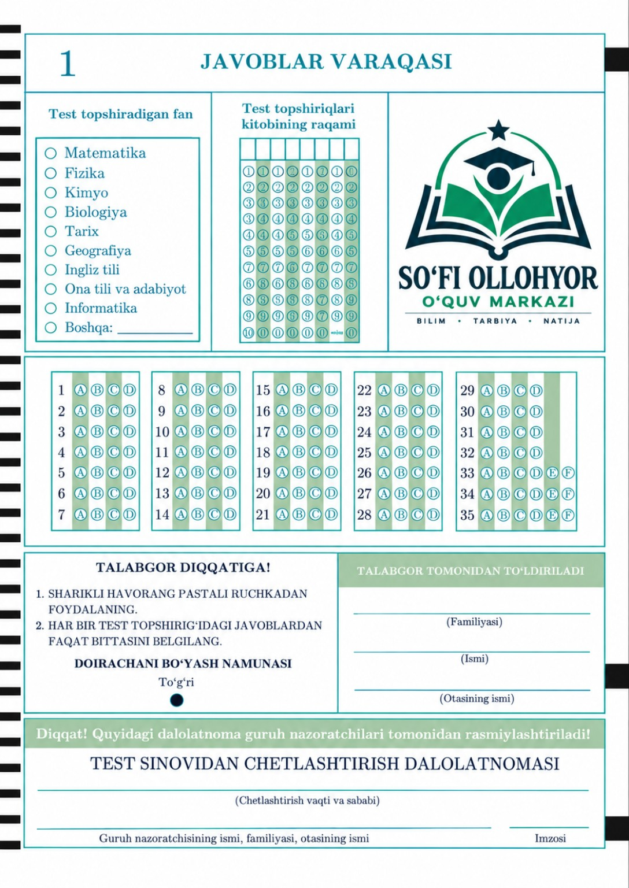

Bilim va yutuqlar
O‘quvchilar reytingi va yutuqlarini kuzatish.
⭐ Reyting natijalari
📝 Test natijalari
Test natijalari hali kiritilmagan. Ma’lumotlar tayyor bo‘lganda kod orqali qo‘shiladi.

O‘quvchilar reytingi va yutuqlarini kuzatish.
Test natijalari hali kiritilmagan. Ma’lumotlar tayyor bo‘lganda kod orqali qo‘shiladi.
